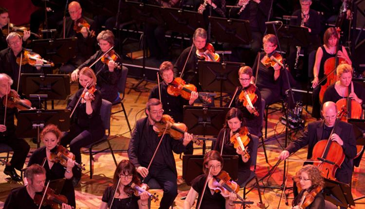

As one of the BBC's six performing groups the BBC Philharmonic gives over a hundred concerts a year, nearly all of which are broadcasted on BBC Radio 3, the BBC's home of classical music. It alos appears anually at the BBC Proms. The BBC Philharmonic champions British composers and works with world class artists from a range of genres and styles. The BBC's Philharmonic's family of conductors is led by Juanjo Mena, Chief conductor of BBC Philharmonic. The BBC Philharmonic supports and nurtures emerging talent from across the north west working closely with Salford City Council and other partners including the Royal Northern College of music, Salford University and Greater Manchester Music Hub to provide unique opprotunities for musicians of all ages to work with the orchestra.
https://www.visitmanchester.com/things-to-see-and-do/bbc-philharmonic-p305271